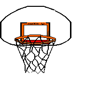
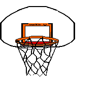

Meu nome é Gabriel Jorge Pereira, moro em Sorocaba-SP e tenho 19 anos. Iniciei meus estudos em informatica em 2016, ano em que passei no vestibulinho da ETEC e entrei para a ETEC Fernando prestes, fazendo tanto ensino medio quanto o tecnico em informatica, onde desenvolvi alguns projetos em HTML, CSS, JS, Java e SQL. Concluindo em 2018 tanto o ensino medio e o curso tecnico e em 2021 continuo meus estudos na area de TI, desenvolvendo projetos próprios e fazendo cursos online sobre a área. No momento, a procura do meu primeiro emprego. Atualmente, tenho conhecimento em HTML, CSS e estou no caminho para dominar JS.

 
